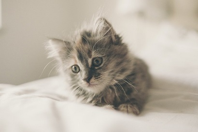

Cats
猫咪是人类最好的朋友，在猫咪之家，你不但可以获得你喜欢的猫咪，更能够和他们一起玩耍，一起度过愉快的时光。
Cats are the best friends of human beings. In the cat house, you can not only get your favorite cats, but also play with them and have a good time together.
<
>

猫咪是否长寿，除了品种决定，这4个因素也很重要
猫咪是很受大家喜爱的宠物，但是有个不得不面对的问题，那就是猫咪的寿命相对于人类而言较短，即使一生无病，平均年龄也仅有12---22年。
面对猫咪寿命走到终结时，我们总是很难过，总希望猫咪可以更加长寿一些，多陪伴一段时间。有些人认为猫咪是否长寿，是由品种决定的，那真的是这样吗？

如果想养猫，我劝你别养两只以上，不然你就没有猫了
猫咪虽可爱，但是养多了不见得是开心的事情，不仅要承担经济上的负担，而且还要接受各种惊喜，猫咪的冷落、顽皮和闹腾。如果你有耐心，爱心和财力，那可以多养几只，也能平添不少乐趣。